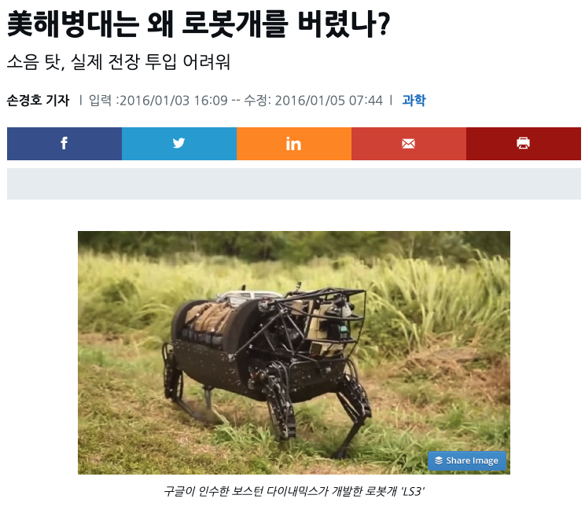

두 얼굴의 로봇개(Robot dog)가 보여주는 인류의 현재와 미래
기술은 우리를 자유롭게 할 것인가? 아니면 그 반대일 것인가?
최근에 현대차가 보스턴 다이내믹스를 인수하면서 주목을 받았다. 구글이 샀다가, 손정의 회장의 소프트뱅크에 팔았던 것을 현대차가 산 것이다. 관련 기사와 분석은 온라인에서 쉽게 검색할 수 있다.
현대차가 인수를 발표한 이후 시점인 2020년 12월 30일에 보스턴 다이내믹스의 유튜브에서는 «Do you love me?»라는 영상을 올렸는데, 해당 영상을 공개한지 불과 일주일도 안되어서 조회수가 2000만회를 넘었다. 로봇이 흥겨운 음악에 맞추어 일사분란하게 춤을 추는 모습이 많은 사람들의 관심을 끌었다.
패러디도 나오며 흥행에 성공하다
뿐만 아니라 흥행의 척도 중 하나인 패러디 영상도 하나 둘씩 올라왔다. 신바람 이박사 음악에 싱크로율에 맞게 만들어진 영상이 올라온 것도 있는가 하면, 요즘 핫한 이날치의 음악에 맞추어 추는 영상도 있다. 원래 영상의 배경 음악인 Do you love me?의 비트에 맞추어 적당히 맞춘 음악을 입히면 이런 류의 영상이 더 많이 나올 수 있을 것으로 보인다.
- 정한용의 모카에 올라온 영상 : 신바람 이박사 음악에 리믹스
- 이날치의 범내려온다에 춤추는 영상
이런 영상이 노리는 효과?
보스턴 다이내믹스는 왜 이런 영상을 올렸을까? 과거에도 로봇 영상들을 올리면서 많은 주목을 받았었다. 치타처럼 빠르게 달리는 로봇부터, 사람의 발길질에도 넘어지지 않는 4족 로봇, 덤블링을 하는 2족 로봇 등 다양한 로봇의 영상이 있었다.
이런한 영상이 노리는 가장 큰 효과는 홍보일테다. 딱히, 대중적인 제품이나 서비스가 나오지 않은 상황에서 그들이 지금 무엇을 하고 있는지에 대해서 전세계 시민과 언론, 투자자, 정부 등에 알리는 목적.
특히, 로봇에 대한 막연한 반감이나 불쾌한 골짜기라든지, 인명 살상에 로봇이 사용될 수 있는 것과 같은 부정적인 시선에 대응하기 위한 것도 큰 몫을 차지할 것이다.

더군다나 보스턴 다이내믹스가 시도한 몇몇 프로젝트는 DARPA의 펀딩을 통해서 최종 성과물을 만들고도, 실전에서 사용하기는 부적합하여 실망감을 안겨준 적도 많았다. 현대차는 이 모든 우려를 다 고려했을테다
미래는 정말 인류가 컨트롤할 수 있을 것인가? : 낙관론과 비관론
이런 주제는 사실 이미 닳고 닳았다. 수없이 많은 논의들과 기사들이 쏟아져 나왔다. OpenAI처럼 책임성 있는 인공지능 개발을 강조하는 프로젝트가 있는가 하면, 전쟁에 기술이 이용되는 것을 반대하며 구글, 아마존 등 미국 주요 테크 기업의 직원들이 기업에 단체로 항의한 적도 있었다.
중요한 사실은 불확실성이 완전히 해소되지는 않았다는 것. 양날의 칼과 같은 로봇을 두고, 로봇 기업 입장에서는 시장에 받아들여지기 위해서 좋은 이미지를 남기는 노력이 당연히 벌어질 테고, 다른 한켠에서는 부정적인 점에 초점을 맞추어 이야기를 만들어 내기도 한다. 현재는 둘이 공존하며 불확실한 미래로 조금씩 가까이 가고 있는 상황이다. [영상1]처럼 인간을 도와주는 로봇개가 될 수도 있고, [영상2]처럼 사람의 머리를 무참히 날려버리는 무자비한 사냥개가 될 수도 있다.
-
[영상1] With you, Spot can
-
[영상2] The Robot Dog in Black Mirror: Metalhead
언제나처럼 이러한 기술들은 많은 경우 국방에 먼저 활용되고, 이후 상업적인 용도로 활용되어 왔었다. GPS가 그랬고, 드론도 그랬다. 로봇도 현재로서는 국방이나 우주개발 등 사람을 대신하기 위한 용도로 가장 먼저 개발되어 왔고, 이제는 서서히 상업적으로 확대되는 조짐이다.
이러한 루트가 무조건 나쁘다는 이야기를 하려는 것은 아니다.
이떄까지는 이러한 흐름이 미국 중심으로 비교적 안정적으로 이루어져왔다고 할 수 있을 것이다. 예를 들어, GPS, 디스플레이, 터치패널, 통신 모듈 등의 다양한 기술들이 군사용 기술로만 남아있지 않고, 스마트폰과 같이 전세계 거의 모든 시민들에게 활용되는 기술로 보급된 것처럼 기술이 인류의 통제 안에서 발전해 왔다.
자율성의 증가와 이데올로기 갈등이 만드는 불확실성
다만, 향후에는 더 자율적인, 즉, 단순히 인간의 조작(수동)에서 벗어난 자동화가 아니라 인간의 판단과 개입에서 벗어난 자율적인 로봇을 비롯한 이동체(자도차 등), 비행체(드론 등)들이 더 많이 나올 것이라는 것이 불확실성의 근원이다. 인공지능의 발전에서 우려하는 것처럼 점점 더 자율성이 강화될 머신들이 우리 곁에 더 많아지는 것이 자명해 지고 있는 현재. 이러한 무질서한 기술의 발전이 미-중 갈등과 더불어 독재자들이 장기 집권하고 있는 러시아, 북한 등의 국가들이 상존하는 것과 같이 국제 지정학적 위기를 발판 삼아서 인류의 통제를 되돌리기 힘든 수준으로 벗어났을 때, 우리는 무질서를 바로잡고 제 궤도로 돌릴 수 있을 것인가?

한때, 인류가 핵전쟁으로 인한 공포에 떨었다가 핵보유국 중심의 다소 특이한 유형의 질서를 통해서 지금은 핵전쟁에 대한 공포가 많이 줄어든 것을 생각한다면, 미래의 질서에 대한 불확실성이 확실히 걷히지 전까지 한동안은 이런 자율성을 획득한 로봇이 또 다른 핵전쟁 공포가 될 수도 있다.
)